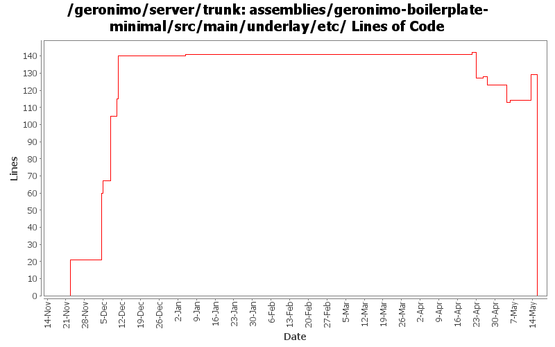

[root]/assemblies/geronimo-boilerplate-minimal/src/main/underlay/etc
 META-INF
(0 files, 0 lines)
META-INF
(0 files, 0 lines)
 plexus
(0 files, 0 lines)
plexus
(0 files, 0 lines)
 rc.d
(0 files, 0 lines)
rc.d
(0 files, 0 lines)

| Author | Changes | Lines of Code | Lines per Change |
|---|---|---|---|
| Totals | 37 (100.0%) | 205 (100.0%) | 5.5 |
| gawor | 6 (16.2%) | 61 (29.8%) | 10.1 |
| djencks | 9 (24.3%) | 56 (27.3%) | 6.2 |
| gdamour | 3 (8.1%) | 39 (19.0%) | 13.0 |
| jdillon | 17 (45.9%) | 27 (13.2%) | 1.5 |
| dwoods | 2 (5.4%) | 22 (10.7%) | 11.0 |
Drop -minimal suffix on the boilerplate, since we only have one of these now, the suffix is meaningless
0 lines of code changed in 5 files:
Tidy up bits which should be in the repo
1 lines of code changed in 1 file:
GERONIMO-4012 Rework GShell integration. Additonal changes on top of Jason's r655744 to use his new configs and to replace the gshell-embeddable usage with individual depends.
19 lines of code changed in 1 file:
crypto library needed in gsh classpath for remote deployment (GERONIMO-4001)
1 lines of code changed in 1 file:
(GERONIMO-3994) Drop remote-control command and related bits
1 lines of code changed in 1 file:
Update classpath again
1 lines of code changed in 1 file:
Use the classpath for gsh
1 lines of code changed in 1 file:
Tidy up the cw config
6 lines of code changed in 1 file:
(GERONIMO-3985) Use SLF4J as the primary logging facade for Geronimo
7 lines of code changed in 1 file:
Nuke geronimo-specific gsh alias bits, will be replaced shortly by a gsh-native alias mechanism
0 lines of code changed in 1 file:
(GERONIMO-3977) Use gmaven's ant 1.7.0 libraries which are compatible with Groovy and Windows
2 lines of code changed in 1 file:
(GERONIMO-3961) Upgrade to GMaven for Maven+Groovy integration, which uses Groovy 1.5.4
1 lines of code changed in 1 file:
updated to mina-1.1.5 to match server runtime
3 lines of code changed in 1 file:
Fix some versions
7 lines of code changed in 1 file:
(GERONIMO-3747) Fixed parentage of module groups, though most still need to have their modules put into the proper groupId
Updated groupId of *everything* under framework/** to org.apache.geronimo.framework, and did my best to update all references
7 lines of code changed in 1 file:
Finish upgrading to gshell 1.0-alpha-1
6 lines of code changed in 1 file:
GERONIMO-3732 steps 1, 2. Move plugin management and some jsr88 base code into a new module
1 lines of code changed in 1 file:
gshell command for install-plugin. also improved list-plugins ghsell command and related code
5 lines of code changed in 1 file:
gshell commands for install-library, deploy, distribute, and redeploy commands
20 lines of code changed in 1 file:
gshell commands for list-targets and list-modules
10 lines of code changed in 1 file:
GERONIMO-3607 cleanup, reduce size of boilerplate plugin by using repo instead
14 lines of code changed in 1 file:
gshell commands for start, stop, undeploy, and restart module commands
20 lines of code changed in 1 file:
gshell command for staring app client
5 lines of code changed in 1 file:
GERONIMO-3607 Add 'assemble a server' support to geronimo and use it from car-maven-plugin and gshell. Not yet available in the console. Better repository support would be desirable
7 lines of code changed in 2 files:
Add a couple of gshell commands to simplify the remote control of servers.
The commands being added are:
* alias: used to alias a commond along with some options and arguments.
etc/layout.xml provides a first aliasing mechanism: a hierarchical name is
mapped to a command. alias suplements this first aliasing mechanism with the
ability to alias a command along with its typical options and arguments.
* unalias: to remove an alias
* execute-alias: to execute an alias
* remote/rsh to start an rsh client
* remote/rsh-server to start an rsh-server
* remote-control/server-control to control a server
Samples for the aliasing commands:
// create the alias 'st' for the quoted command
> alias st 'geronimo/start-server -G server.name=yellow -D property=value'
// execute the alias 'st'. This executes the command in quote above
> excute-alias st
// display defined aliases
> alias
// remove the alias 'st'
> unalias st
Samples for the remote server control commands:
// start an rsh-server:
> remote/rsh-server tcp://localhost:9999
// remote 'start' the server 'defaultServer'
> remote-control/server-control start defaultServer
// remote 'stop' the server 'defaultServer'
> remote-control/server-control stop defaultServer
All the commands are implemented in Groovy. XML manipulations are done via
XmlSlurpers.
Aliases are stored in a configuration file located by default in
etc/aliases.xml
Server configurations, used by the remote control command, are stored in a
configuration file located by default in
etc/server-configuration.xml
New JARs are being added to lib/gshell for the support of the rsh bits.
39 lines of code changed in 3 files:
GERONIMO-3605 sync with current gshell, use consoleReader more, cache more, allow a comment for a module in config.xml in plugin metadata.
21 lines of code changed in 1 file:
Update to use the latest gshell layout bits
0 lines of code changed in 2 files:
GERONIMO-3605 preliminary work to get deployment gshell commands. list-plugins works but needs formatting
0 lines of code changed in 2 files: